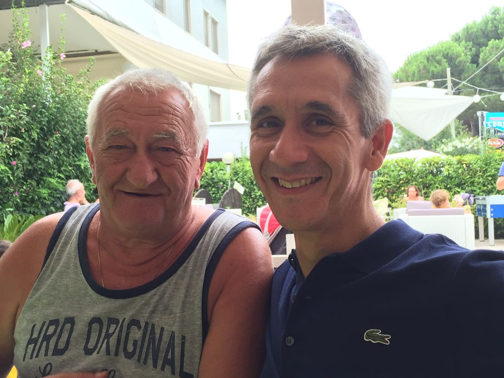

Fabio Palusci, mentor of BoostAbruzzo, is a professional expat from Abruzzo in Malta with an immense love for his roots and for our region. We had the pleasure of interviewing him for our column DI CHI SI LU FIJE? Thank you Fabio, we hope to see you soon in Malta or Silvi!
Fabio, tell us about yourself! Who are you, where do you come from and what do you do?
I will introduce myself quickly: Palusci Fabio, born in 1973 and currently living in Malta. Son of emigrants, or rather expats, from Abruzzo: father from Teramo, Bisenti, and mother from Pescara, Loreto Aprutino. A nice mix! I was born in Belgium, but my parents managed, whether they wanted to or not, to keep intact my 'Abruzzesità' (regional heritage). I spent long periods in Abruzzo but never decided on a permanent return. I graduated as a translator in the beautiful Antwerp (not Anversa degli Abruzzi but the city of Antwerp in Belgium). I started working for an American multinational company which, after a few projects as a temporary expat, brought me to Rome, where I lived for about 15 years before moving abroad again in 2015. This time to Malta where I was offered an opportunity "that I couldn't refuse".
I am currently Head of Procurement at Betsson Group. I have responsibility for the procurement process for one of the largest iGaming (Digital Entertainment) groups in the world. Betsson offers its services fully online in over 17 regulated markets with over 20 Brands. This role allows me to work in an Internet Technology Company with financial, legal (compliance and security) and commercial responsibilities. A great challenge!
What is expat life like?
Malta allows for a good expat life. Sun and sea at your fingertips. The geographical position makes it extremely easy to get to Italy. Thanks to the direct Malta - Pescara flight, it is very easy to plan a return trip. It is like a business trip with the benefits of a place like Malta.
Do you miss Abruzzo?
Of course I miss Abruzzo! Everyone has his comfort zone where they feel truly at home. Even though I did not spend my entire childhood in Abruzzo... it is definitely my comfort zone. For about 30 years now, I have been spending my summer holidays (and not) in Silvi Marina. I lived there as a student, and it has become our 'home' for the summer.
It is a comfort place for the whole family.
What are the pros and cons of living abroad?
Living abroad can bring many advantages... Both personal and professional.
Exposure to multicultural environments allows you to develop your personality in a different dimension. It is well known that you feel even more Italian (or rather Abruzzese) outside your own territory. Fortunately, it is also easy to 'return' for short periods (perhaps not at this precise moment but we will return to do so as soon as possible).
Professional opportunities are extraordinarily rich abroad. Some countries have exploited the opportunities offered by digitalisation and innovation very well. I think BoostAbruzzo is a fantastic initiative to stimulate more these opportunities in Abruzzo.
I think that the real disadvantage of living abroad is the lack of the everyday life in Abruzzo. The real beauty of things lies in the details and nuances that you cannot savour abroad.
Would you go back to Abruzzo?
Definitely, yes. That is the plan!
Abruzzo: Sea or mountains?
We know that Abruzzo evokes both sea and mountains. My preference however goes to the sea.
What is your favourite dish from Abruzzo?
It is a hard choice, given the vast repertory... but I vote for 'li surgitt' with meat sauce. Obviously with a good Montepulciano.
One last question... Di chi si lu fije?
I am the son of Elio Palusci, from Teramo (Bisenti) born in 1946, who emigrated to Belgium in 1966 to become a worker in the Ford car factory. My father was also, and still is, an expat, although in those days they were called emigrants. Bisenti, which according to a legend is the birthplace of Pontius Pilate, is a small village of almost 2,000 inhabitants at the foot of the Gran Sasso Mountain range, in the upper valley of the Fino river. Palusci is a typical bisentese surname with a prevalent presence in the hamlet of Chioviano Alto. In fact, I spent a lot of my summer holidays in various places in this part of the region.
If Fabio's story has intrigued you, connect with him on LinkedIn: Fabio Palusci
